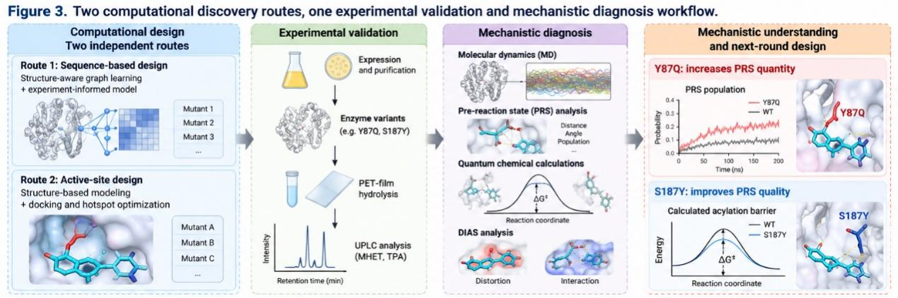

Results
Y87Q: Making Reaction-Ready States Easier to Reach
In PET-film assays with purified enzymes, Y87Q released about 1.9-fold more soluble hydrolysis products than FAST-PETase at 60 °C. At 70 °C, the increase was about 4.9-fold. Residue 87 lies outside the catalytic triad. A direct strengthening of a catalytic interaction was therefore not a sufficient explanation. MD showed that the overall protein fold was largely retained. The local second-shell environment around the catalytic region, however, was reorganized.
The substitution introduced a persistent local interaction between Gln87 and Met161. Although small in a static structure, the difference changed the conformations sampled by the bound enzyme–substrate system. We wanted to know whether the substrate repeatedly reached an arrangement suitable for attack by catalytic Ser160. This moved our analysis from whether PET could bind to what happened after it was bound. A single favorable pose would show a possible attack geometry, but it could not show how often that geometry occurred. For that, we needed to examine the distribution of structures over time.
We defined a geometric PRS using two features. The first was the distance between the Ser160 nucleophile and the PET-derived ester carbonyl. The second was the Bürgi–Dunitz approach angle. For FAST-PETase, 11.9 ± 1.4% of sampled configurations met these criteria. For Y87Q, the proportion was 24.2 ± 2.8%. The surrounding catalytic environment was also better engaged within the reaction-ready configurations.
We interpret these observations as a change in how often existing states are sampled. Y87Q allows the enzyme–substrate system to spend more time in arrangements from which chemistry could begin, without requiring a new catalytic mechanism. Part of the gain can therefore be explained by improved access to reaction-ready structures.
We also examined reaction energy using quantum-chemical calculations on representative structures taken from PRS configurations. The mean calculated acylation barrier decreased from 20.1 kcal mol⁻¹ for FAST-PETase to 18.6 kcal mol⁻¹ for Y87Q. Distortion/interaction analysis associated much of the improvement with a smaller structural distortion requirement. Before the chemical step began, the system was already closer to the arrangement needed for reaction. PRS quantity is the term we use for the population and accessibility of these geometrically reaction-ready states.
S187Y: When Better Binding Does Not Explain Better Catalysis
The candidates in our second route behaved differently. We modeled mutations near the substrate-binding region and used docking to decide which to test. S187Y produced the largest improvement in PET-film hydrolysis among the substitutions tested in this route.
The activity ranking from experiments differed from the docking-energy ranking. Several mutations with favorable docking scores produced little or no activity gain, whereas S187Y increased PET-film hydrolysis by about 2.18-fold in its FAST-PETase-derived background. We also tested the substitution in the independently engineered ThermoStable-PETase scaffold. It showed an improvement of about 3.44-fold, with increased formation of both MHET and TPA.
The binding score helped us determine whether or not a favorable binding state would be achieved. In order to help understand the activity observed in our experiment, we had to gain insight into the movement from the binding state towards a transition state. A favorable binding state by itself does not provide us with information about how easy that is going to be. It is appropriate to use docking to study the binding state, but the chemical reactions need different analysis techniques. If there is a mismatch between the ranking of the experimental activities and the binding score, we must investigate further.
The quantum-chemical results supported this interpretation. The overall serine-hydrolase reaction topology was retained in FAST-PETase, Y87Q, and S187Y, but their mean calculated acylation barriers were 20.1, 18.6, and 17.8 kcal mol⁻¹, respectively. DIAS analysis suggested that the main advantage of S187Y differed from that of Y87Q. Reduced distortion was the principal association for Y87Q, whereas favorable interactions in the transition-state region contributed more strongly for S187Y. This is consistent with an improvement in PRS quality. A more direct quantitative assignment will still require future analyses conditioned on PRS configurations.
PRS Quantity and PRS Quality: Two Levels of Catalytic Preorganization
Comparing Y87Q with S187Y led us to distinguish two complementary aspects of catalytic preorganization. Catalysis requires a reaction-ready geometry, but meeting the geometric criteria alone is insufficient. Two enzyme–substrate configurations with the same nucleophile–electrophile distance and attack angle may still differ substantially in oxyanion hole organization, proton-transfer readiness, electrostatic complementarity, substrate distortion, hydration, and transition-state stabilization. The opposite limitation is also possible: an enzyme may reach highly productive reaction-ready configurations so rarely that the overall catalytic flux remains restricted by their low population.
In this description, PRS quantity is the probability of the conformational ensemble entering a geometrically competent, reaction-ready subensemble. PRS quality refers to the chemical productivity of configurations in that subensemble. Y87Q mostly demonstrates the quantity factor since the modification of the second shell provides attack-friendly conformations and decreases the distortion required to reach the transition state region. On the other hand, S187Y presents an example of the complementary factor where catalysis is enhanced with favorable contacts after the conformation of the enzyme is attained. The distinction separates two questions that an activity measurement often combines: can the enzyme reach a catalytically competent configuration, and how productive is the configuration once reached? This framework is not a complete kinetic model of PET depolymerization. Nor are PRS quantity and PRS quality independent rate constants. We use them as mechanistic descriptors to distinguish access to catalytic states from chemical productivity within those states. This is also how the original analysis treats them: as complementary quantities that cannot be used interchangeably, within a conceptual model rather than a complete kinetic account of the degradation process.
![Two separable levels of catalytic preorganization: PRS quantity and PRS quality. An MD ensemble contains many enzyme–substrate configurations, of which only some meet the geometric requirements for nucleophilic attack. PRS quantity is the probability of reaching this reaction-ready subset. PRS quality describes chemical productivity conditional on a configuration being within that subset. Y87Q chiefly improves access to reaction-ready configurations; the S187Y results are consistent with improved interactions as the system progresses toward the transition-state region.](assets/project-doc/image7.png)
PRS Quantity and PRS Quality: Two Levels of Catalytic Preorganization
The critical mechanistic insight gained through this project is the separation of PRS quantity from PRS quality.
Not all geometries sampled by the enzyme-substrate complex catalyze reactions. Prior to a catalytic step taking place, the reacting groups must first attain the proper relative positioning. We call such geometries, which allow for chemical reactions to happen, pre-reaction states (PRS). Molecular dynamics enables us to consider PRSs not in terms of an optimally structured geometry, but as a subset of the conformational space.
We define PRS quantity as the probability of the enzyme-substrate ensemble finding itself in a reaction-ready subensemble. One clear case where we observed this in our study was Y87Q. Using the nucleophile-carbonyl distance in Ser160 and the Burgi-Dunitz attack geometry as criteria for a PRS, we found that PRS quantity in Y87Q increases from 11.9 +/- 1.4% in FAST-PETase to 24.2 +/- 2.8%. Thus, the mutation does not just change how a static structure looks; it also changes the probability with which it samples reaction-ready geometries.
Nevertheless, a catalytically active geometry does not always correspond to efficient chemistry. It is possible that two geometries can be characterized by identical distance and angle criteria and yet differ in the parameters directly related to catalysis, such as oxyanion hole arrangement, ability to perform proton transfers, electrostatics, substrate strain, hydration, and transition-state interactions. In this regard, we introduce the term PRS quality to characterize the chemical efficiency of reaction-ready geometries.
The variant S187Y provides an example of why such a distinction is important. The activity of this variant was not predicted by the docking energy ranking. However, the experiment shows the increase of the PET film hydrolysis rate and decrease of the mean barrier of the acylation step calculated with the help of the quantum-chemistry method. The DIAS analysis shows that the advantage of this variant is connected to the better transition-state interactions rather than the decrease of substrate strain as seen for Y87Q. Therefore, one can conclude that S187Y is a good example of improvement of chemical quality of reaction-ready configurations. However, the quantitative evaluation of this effect will need more analysis of PRS-like configurations.
The more general insight gained from this study is thus the distinction between access to catalytically active states versus chemical efficiency of such states. Both factors are complementary but not equivalent. In this way, the approach should be seen as a mechanistic diagnostic method rather than an exhaustive kinetic analysis of PET depolymerization by PET hydrolases.
It might be also helpful for the analysis of other enzymes where the catalytic process is highly dependent on substrate orientation and dynamics. For such enzymes, the next steps in future research would involve asking two consecutive questions: (1) whether reaction-ready states are formed frequently enough, and (2) whether such states are chemically efficient.

Potential PET hydrolase variants have been discovered through two distinct computational methods. Path A included structure-based graph learning and experiment-based sequence modeling approaches resulting in the identification of Y87Q, while Path B included active site design and molecular docking approach favoring S187Y. The discovered variants have then been expressed, purified, and their activity tested via PET-film hydrolysis with subsequent UPLC quantification of MHET and TPA levels.
Variants exhibiting increased activity were analyzed further via molecular dynamics simulations, pre-reaction state analysis, quantum-chemical calculations and DIAS analysis. This pipeline does not consider computational prediction the final step in this process. On the contrary, the experiments serve as the functional standard, while the mechanistic analysis helps to discover what bottlenecks are being altered via mutations.